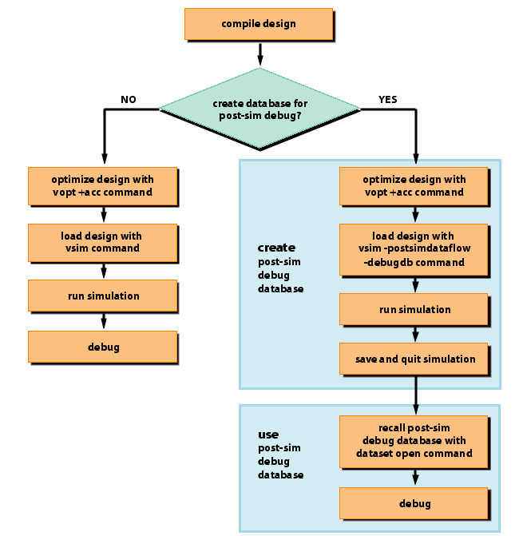

The usage flow
for debugging the live simulation is as follows.
Procedure
- Compile the design using the vlog and/or vcom commands.
- Optimize the design with the vopt command.
vopt +acc <design_name> -o <optimized_design_name>
The +acc argument provides
visibility into the design.
- Load the design with the vsim command:
vsim <optimized_design_name>
- Run the simulation.
- Debug your design.
- Figure 1 illustrates the current
and post-sim usage flows for Dataflow debugging.
Figure 1. Dataflow Debugging Usage Flow 